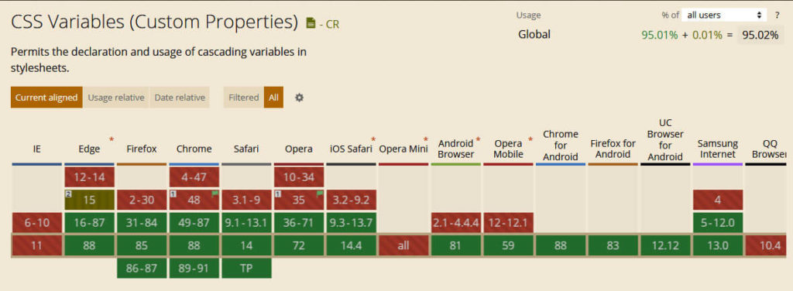
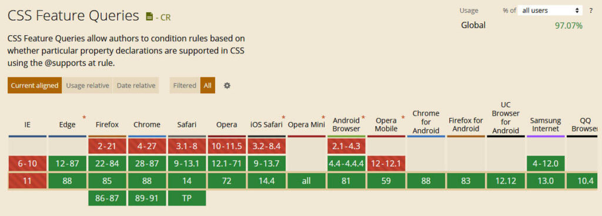
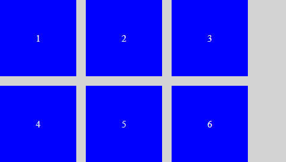
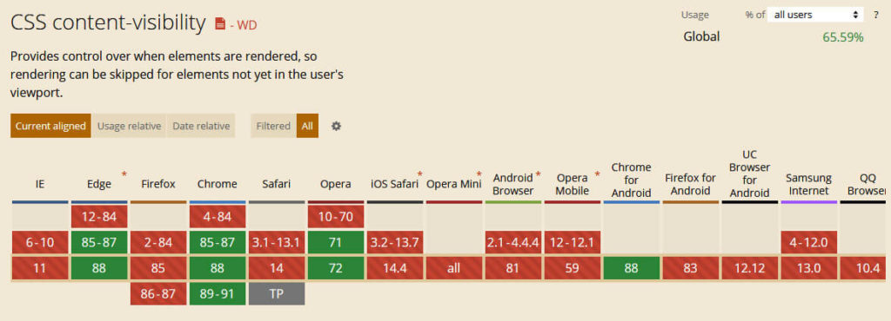
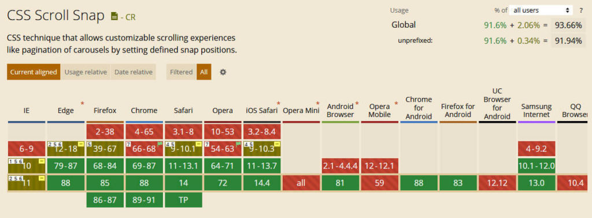

没有 CSS，现代 Web 应用程序将无法实现。标记语言（译者注：这是样式表语言……）负责让网站有良好的视觉体验、令人愉悦的布局，并且每个元素都各居其位。但是，你知道新的 CSS 特性一直在出现吗？
多年来，CSS 已经超越了单纯设置背景色、边框、文本样式、边距和盒模型的范畴。现代的 CSS 现在能够提供过去需要 JavaScript 或其他解决方法才能实现的功能！
为了庆祝 CSS 的发展，在这篇文章中，我们想看看 CSS 在 2021 年推出的一些令人惊奇而大家可能还不知道的功能（译者注：准确来说，2021 年比较有用但又不热门的功能）。我们将重点介绍 Web 设计师和开发者可以使用的现代 CSS 的出色功能，讨论一下用例和浏览器支持，并为大家提供一个简单的示例。
让我们开始吧！
这是 CSS 如今具有的一些令人惊奇的功能。
译者注：这里的自定义属性（Custom Properties）和我们所说的变量是一个东西，见 MDN Web Doc
自定义属性基本上允许我们定义 CSS 属性的替代品以用于我们的设计。一个例子就能让你理解为什么说这个功能有用：
通常，在构建主题时，我们会选择一种配色方案，然后在必要时声明这些颜色。
a {
color: #cd2653;
}
.social-icons a {
background: #cd2653;
}
.wp-block-button.is-style-outline {
color: #cd2653;
}
这种方法的问题是，如果我们想要更改一种颜色，则必须在每一处使用了这个颜色的地方做出对应的修改。尽管代码编辑器可以通过搜索和替换轻松地做到这一点，但这仍然很烦人。尤其是如果我们只是想进行快速测试，并且必须再次撤消所有操作。
自定义属性就解决了这个问题。在它们的帮助下，我们可以轻松地将刚才所说的配色分配给一个变量，然后每次使用该颜色时，只需将其作为 CSS 属性输入即可，如下所示：
:root {
--global--color-primary: #28303d;
}
a {
color: var(--global--color-primary);
}
.social-icons a {
background: var(--global--color-primary);
}
这样，每当我们想要对配色进行更改时，只需要在一个地方进行更改即可。太酷了吧？过去，我们还需要使用 Sass 之类的预处理器来使用变量，而现在它是 CSS 的原生功能。
正如您在上面看到的，自定义属性也非常易于使用。在 :root 选择器下的文档开始处定义变量（请注意，变量前面应使用双连字符 --，这是将变量称为自定义属性的原因，它们也区分大小写！）。之后我们就可以通过 var() 函数在整个文档中使用它们。
如果要更改变量，只需更改 :root 下面的声明就可以了。
此 CSS 功能的兼容性如何，浏览器支持非常好：

接下来，有一个类似于媒体查询的 CSS 规则。不过我们不是用它基于屏幕大小或设备类型编写特定的样式，而是根据用户浏览器支持的 CSS 属性和值，应用特定的样式。
这有什么用？
正如你将在本文中看到的那样，并非所有的浏览器和设备都支持所有 CSS 功能。尽管我们通常可以使用优雅降级来处理此问题，但在某些情况下，如果我们不专门包括对最新的技术的支持，则使用这些技术可能会严重破坏我们的网站的样式结构。
此外，我们还可以使用 @supports 为支持特定功能的更现代的浏览器添加额外的功能或样式（这就是为什么使用的查询 @supports 也称为“功能查询”的原因）。
如果您熟悉媒体查询，则使用支持检查将非常容易。使用方法如下：
@supports (display: grid) {
.site-content {
display: grid;
}
}
如你所见，其实不过就是规则的声明后跟要在方括号中检查的属性或属性 — 值对，再加上我们平时用的 CSS 声明用于说明满足条件时要应用哪些样式规则。
上面的示例指出，如果浏览器支持 CSS 网格功能（稍后将对此进行详细介绍），则应用 display: grid; 样式到 .site-content 的元素。
同样重要的是要注意 @supports 支持使用运算符 not、and 和 or（也可以结合使用）以创建更具体的规则，例如对不支持该特定功能的浏览器的优雅降级：
@supports not (display: grid) {
.site-content {
float: left;
}
}
为了能够正常使用 @supports 功能，你需要知道哪些浏览器支持它（我知道，这是一种元数据）。好消息是**所有的现代浏览器都支持**。

但是，由于这些查询的目的是启用或禁用旧版浏览器无法处理的功能，因此请确保正确编写它们。即如果要使用功能查询，请为支持功能查询的浏览器创建功能查询条件。让浏览器以它无法理解的方式忽略某些内容是没有用的。
Flexbox 是另一种 CSS 布局模块，而我们已经讨论过它。长期以来，Flexbox 的缺点是它不支持间隙，我说的是，不支持定义行和列之间的间隔。
幸运的是，浏览器对此 CSS 功能的支持正在改善。现在，我们可以开始使用 gap、row-gap 和 column-gap 属性，在网格布局、Flexbox 布局和 Multi-Column 布局中创建间隙。
这是一个在 Flexbox 中创建间隙的快速示例：
.flex-gap-test {
display: inline-flex;
flex-wrap: wrap;
gap: 16px;
}
<div class="flex-gap-test">
<div>1</div>
<div>2</div>
<div>3</div>
<div>4</div>
<div>5</div>
<div>6</div>
</div>
这就是效果：

尽管我们可以通过 margin 实现相同的布局，但是与简单地声明间隙大小相比，它需要更多的标记和解决方法。
content-visibility 是 CSS 中一个非常酷的新功能，能够有效提高网站性能。它基本上像延迟加载一样工作，而且不仅适用于图像，还适用于任何 HTML 元素。我们可以使用它来实现网站的懒加载。
使用也超级容易。只需将其应用于我们选择的元素，如下所示：
.content-below-fold {
content-visibility: auto;
}
content-visibility 支持三个值。默认情况下为 visible，此时元素将照常加载。我们可以将其设置为 hidden，即无论元素是否可见都不会呈现该元素。设置为 auto 时，则会跳过可见区域之外的元素，然后在它们出现在屏幕上时才开始进行渲染。
这可是很酷的东西，对不对？
在这种情况下可能也很重要的一件事是考虑一下 contain-intrinsic-size。由于设置为 content-visibility: hidden; 的元素的大小实际上为零，因此我们可以将理论高度和宽度应用于隐藏的元素，以便浏览器可以从一开始就将其考虑在内，而不是在渲染元素时考虑。这样，我们可以避免在滚动过程中布局被突然改变。
浏览器支持方面，content-visibility 仍然有些差劲，不过正在朝着那个方向前进着，contain-intrinsic-size 同理。

我预计一旦它被更广泛地采用，它将成为加速渲染过程的最有效工具之一。
在过去，如果我们想在网站上移动某些内容，通常必须求助于 JavaScript（对于 MySpace 一代的用户来说则需要求助 GIF 动画）。但是你可能不知道的是，CSS 早就能够做到这一点。实现这种目标的三种主要方式是：
transition —— 支持平滑地从一个属性值更改为另一个属性值（例如，悬停效果），而不是突然更改。transform —— 支持在 2D 和 3D 空间中移动、旋转和缩放元素。animation —— 在 CSS 中设置简单或复杂的动画，并配置它们的运行方式和运行时间。自然，在这里我们没有空间详细讨论所有这三个部分。如果您想了解更多信息，请务必查看上面的链接。但是，让我们为每个示例做一些快速练习示例，以便您对可能的效果有一个印象。
这是 CSS 过渡的快速示例：
div {
width: 100px;
height: 100px;
transition: height 3s;
}
div:hover {
height: 500px;
}
当有人将鼠标悬停在 div 元素上时，上述的代码会将这个元素高度在三秒内增加到 500px。
以下是 CSS 转换的示例 —— 当有人将鼠标悬停在元素上方时，它将使元素顺时针旋转 30 度：
div:hover {
transform: rotate(30deg);
}
最后，是展示 CSS 动画使用方式的简短代码段：
@keyframes color-change {
from {
background-color: blue;
}
to {
background-color: yellow;
}
}
div:hover {
animation-name: color-change;
animation-duration: 3s;
}
请注意我们使用 @keyframes 命名动画并定义其功能，然后我们需要使用 animation-name 将该动画应用于元素。animation-duration 则控制完成所需的时间，然后还有不少其他类似的属性～
如果你想尝试所有这些方式，那么有个好消息，浏览器对它们的支持非常好（请参见 Transition、2D Transform、3D Transform 和 Animation）。因此，没有任何障碍可以让您随意玩转 CSS 过渡、转换和动画。
滚动捕捉让我们可以选择将用户的视口锁定到站点的某些部分或元素。对于创建很酷的过渡效果并在向下滚动页面帮助用户专注于最重要的页面元素的场景而言，这个功能非常有用。我们可以在这里找到一个简单的演示。
这种效果在移动设备的应用程序中很明显，但是，通过滚动捕捉，我们也可以将其带到网站上。
在最基本的情况上用法也相对简单。我们只需将滚动捕捉的类型应用于容器并定义其子对象应捕捉到的位置。
.container {
scroll-snap-type: y mandatory;
}
.container div {
scroll-snap-align: start;
}
当然还有更多有关它的使用特色。如果你想了解它，CSS Tricks 已经有了一篇很完美的文章了。
然后是浏览器的兼容性，这是相当不错的。

但是请注意，scroll-snap 属性之间的支持会有些许不同。因此，请确保检查你的特定用例。
你可能不知道的新 CSS 功能列表中的最后一个条目是 :is 和 :where 伪类，它们允许我们通过缩短 CSS 选择器列表来减少 CSS 样式中的重复代码。
例如：
.main a:hover,
.sidebar a:hover,
.site-footer a:hover {
/* 样式 */
}
还有这个：
:is(.main, .sidebar, .site-footer) a:hover {
/* 样式 */
}
同理 :where:
:where(.main, .sidebar, .site-footer) a:hover {
/* 样式 */
}
如果包含的样式标记相同，那又会有什么区别？区别在于 :is 更加具体。它采用括号中最具体元素的针对性级别。与此相反，:where 的针对性始终为零。因此更容易按照案例进行覆盖。
浏览器支持方面 :is 和 :where 仍然是有些不完全，但正在逐渐变好起来。因此我们随时开始尝试它们。
像所有其他 Web 技术一样，CSS 也在不断发展。这意味着总会有新的 CSS 功能出现，有新的东西让我们尝试。
本文我们主要讲了一些我们可能没注意到的现代 CSS 所具有的功能，并且还有更多的类似功能等待着我们的发掘。—— 如果你还有其他想要分享的，请告诉我们，我们会很开心的。除此之外，祝你编程愉快！
你最喜欢的现代 CSS 功能是什么？在下面的评论部分中分享它！
如果发现译文存在错误或其他需要改进的地方，欢迎到 掘金翻译计划 对译文进行修改并 PR，也可获得相应奖励积分。文章开头的 本文永久链接 即为本文在 GitHub 上的 MarkDown 链接。
掘金翻译计划 是一个翻译优质互联网技术文章的社区，文章来源为 掘金 上的英文分享文章。内容覆盖 Android、iOS、前端、后端、区块链、产品、设计、人工智能等领域，想要查看更多优质译文请持续关注 掘金翻译计划、官方微博、知乎专栏。